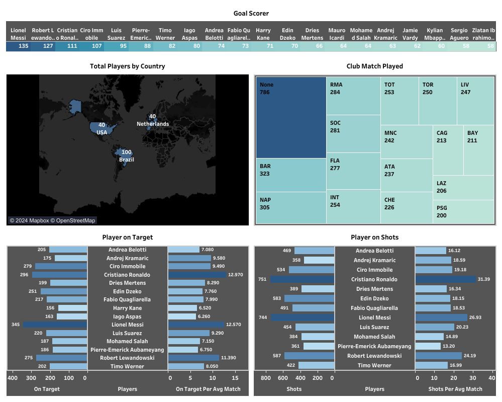

Cleaning Data menggunakan SQL Server Management Studio
Latihan kali ini berfokus mengenai cleaning data menggunakan Ms SQL Server Management Studio. Dataset didapatkan dari kaggle. Tahap pertama, proses dimulai dengan menghapus kolom yang tidak digunakan seperti column16, column17, column18, dan lain-lain. Tahap kedua adalah proses standarisasi format yang sesuai dengan database yang dibutuhkan. Proses dimulai dengan mengecek apakah kolom Shots, OnTarget dan Year bernilai NULL. Selanjutnya, mengecek apakah terdapat data duplikat pada database menggunakan SELECT DISTINCT. Tahap ketiga, memilih dan menghapus data yang tidak digunakan. Setelah itu, UPDATE kolom menjadi 2 angka dibelakang koma untuk semua kolom yang bertipe data float. Terakhir, lakukan pengecekan kembali.
Tahap selanjutnya, membuat tampilan dashboard di Tableau. Saya mencoba membuat dashboard tersebut menjadi lebih menarik. Berikut tampilan dashboard yang telah dibuat.
Dataset : https://www.kaggle.com/datasets/mohamedhanyyy/top-football-leagues-scorers